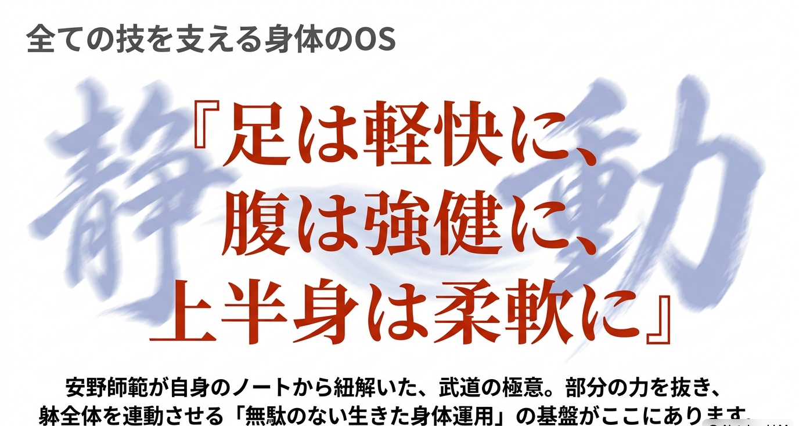
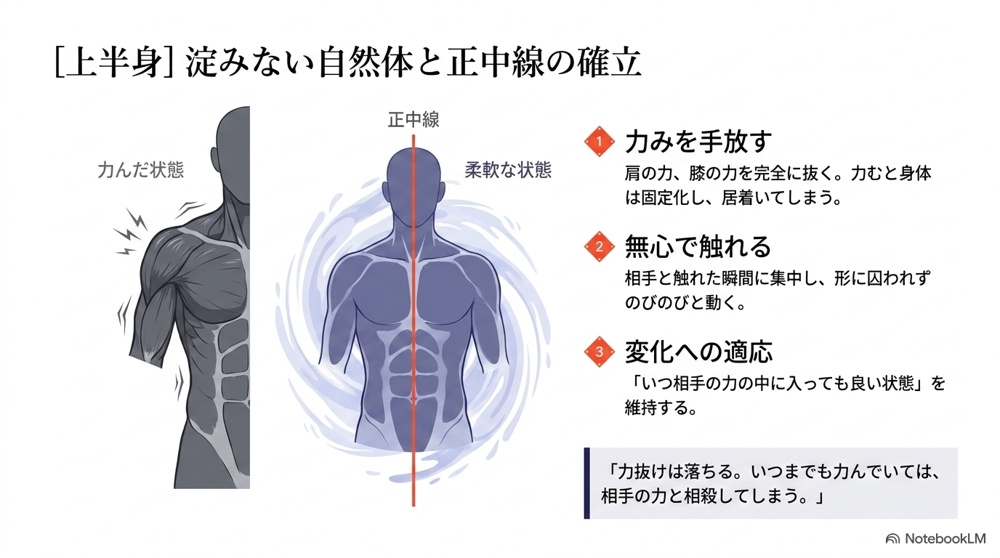
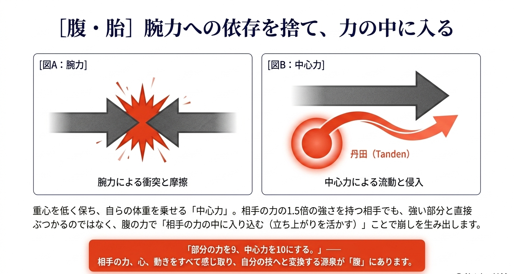
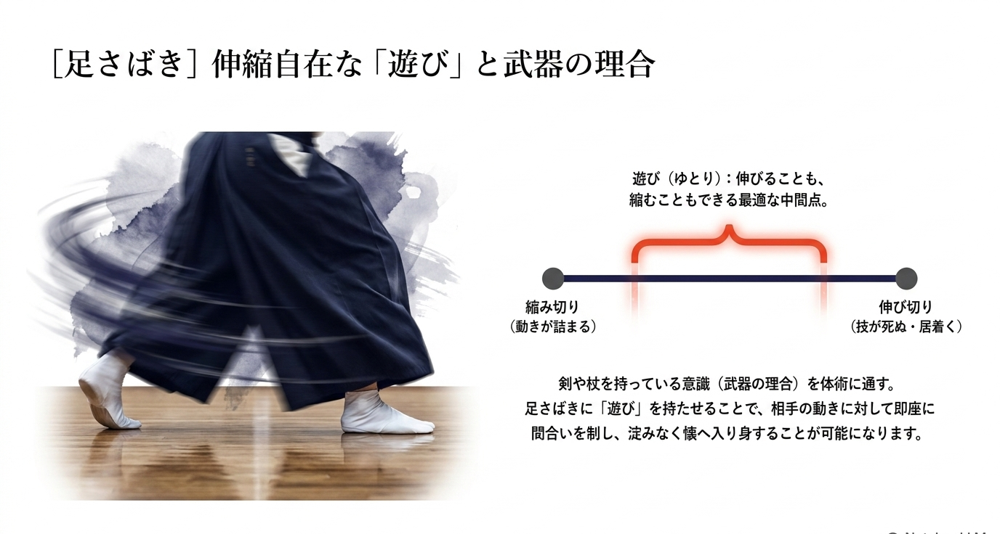
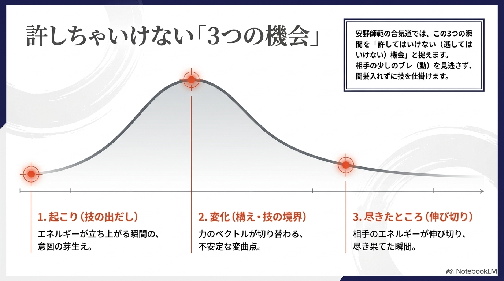
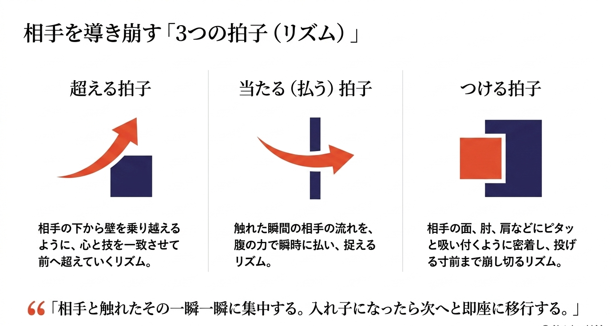
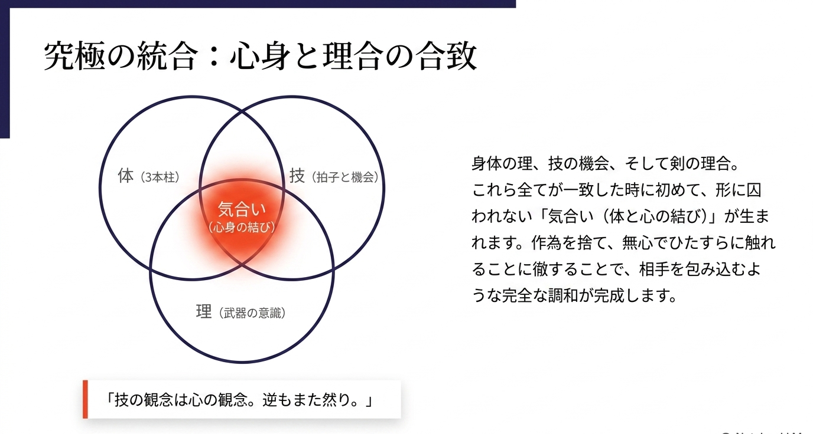

相模合気道連盟 安野正敏師範に学ぶ
「生きた身体」の理合と運用 — 躰・拍子・機会という三本の柱から、
安野師範の合気道を紐解きます。
ROOT PRINCIPLE

安野正敏師範が自身のノートから紐解いた、武道の極意。部分の力を抜き、躰全体を連動させる「無駄のない生きた身体運用」の基盤がここにあります。 腕力で振り回すのではなく、相手の力の中に入り、導き、即座に投げる — それがこの流派の一貫した思想です。
THREE PILLARS OF THE BODY
「腹は上半身を司る。下半身を活かすために腰がある。」身体の各部が役割を全うした時、圧倒的な力が生まれます。

01 ／ 上半身
肩や膝の力みを完全に抜く。力むと身体は固定化し、居着いてしまう。中心（正中線）は一切ブレず、外縁（肩・腕）だけが圧力に適応する。

02 ／ 腹・胎
「部分の力を9、中心力を10にする。」腕力による衝突ではなく、丹田を中心とした中心力で、相手の力の中に流動的に入り込む。

03 ／ 足さばき
完全に伸び切らず、完全に縮まない。剣や杖を持つ意識が、徒手の姿勢と足さばきを決定する。常に次の変化へ移行できるゆとりを保つ。
SELF-DIAGNOSIS
相手を無理やり引っ張り回すのではなく、「誘い（間）」を作り出し、自ら最適な位置へと動くのが合気道の理合です。
| 診断の次元 | 力任せの動き（対立） | 安野師範の理合（調和） |
|---|---|---|
| 力の源泉 | 腕などの「部分」の力 | 丹田（腹）と体重移動の「全体」の力 |
| 接触の瞬間 | 反発し、相殺する（ブレーキ） | 相手の力の中に入り込む（同調） |
| 関節の状態 | 伸び切る、または固まる | 伸縮自在な「遊び」を保つ |
| 結果 | 腕力のある者が勝つ | 相手の動きを己の技へ変換する |
THE SECOND PILLAR — OPPORTUNITY
相手の攻撃サイクルに潜む絶対的な隙。この3つの瞬間を、間髪入れずに攻め入らなければなりません。

エネルギーが立ち上がる瞬間の、意図の芽生え。
力のベクトルが切り替わる、不安定な変曲点。
相手のエネルギーが伸び切り、尽き果てた瞬間。
THE THIRD PILLAR — RHYTHM
相手と触れたその一瞬一瞬に集中する。入れ子になったら次へと即座に移行する。

相手の下から壁を乗り越えるように、心と技を一致させて前へ超えていくリズム。
触れた瞬間の相手の流れを、腹の力で瞬時に払い、捉えるリズム。
相手の面、肘、肩などにピタッと吸い付くように密着し、投げる寸前まで崩し切るリズム。
「相手がちょっとでもブレた。そこをすかさず、導き即、投げ。カパを入れずに攻める。」
THE MECHANISM
相手が少しでも動いた・ブレた瞬間を捉え、ぶつからずに腹で受け入れ、間（カパ）を入れずに投げへ至る、一連の連続動作。
ULTIMATE INTEGRATION

身体の理、技の機会、そして剣の理合。これら全てが一致した時に初めて、形に囚われない「気合い（体と心の結び）」が生まれます。 作為を捨て、無心でひたすらに触れることに徹することで、相手を包み込むような完全な調和が完成します。
BEYOND THE MAT
安野正敏師範の教えは、単なる武道の技法にとどまりません。無駄な力を抜き、ブレない中心を持ち、他者とぶつかることなく調和する。 この「生きた身体」の理合は、そのまま日常生活の美しい立ち居振る舞いや、現代を生きる心身の調和へと繋がります。